!which pip~/projects/data/Brickman/conda/envs/scvi-1.1.5/bin/pip!which pip~/projects/data/Brickman/conda/envs/scvi-1.1.5/bin/pip%matplotlib inline
%load_ext autoreload
%autoreload 2
import scvi
import scanpy as sc
import pandas as pd
import numpy as np
import seaborn as sns
import matplotlib.pyplot as pltimport jax
jax.devices()[CudaDevice(id=0), CudaDevice(id=1), CudaDevice(id=2), CudaDevice(id=3)]import sys; sys.path.append("../scripts/")
from helpers import normalize_smartseqGENE_LEN = '~/Brickman/shared/references/mus_musculus/ensembl/GRCm38_102/Mus_musculus_GRCm38_102_gene_length.txt'import urllib.request, json
cc_url = "https://github.com/brickmanlab/project-template/raw/master/%7B%7B%20cookiecutter.project_name%20%7D%7D/data/external/mouse_cell_cycle_genes.json"
with urllib.request.urlopen(cc_url) as url:
cc_dict = json.load(url)
CC = sum(list(cc_dict.values()), [])adata = sc.read_h5ad("../data/external/niakan_et_al/mouse/mtx_conversions/combined_matrix.h5ad")
adata.obs['LIMS.ID'] = adata.obs['sample'].str.split('_', expand=True).iloc[:, 0]
adata.obs = adata.obs.merge(pd.read_csv("../data/processed/Samples_LIMSID.csv"),
left_on='LIMS.ID', right_on='LIMS.ID', how='left').set_index(adata.obs_names)
adata.obs['batch'] = "NIAKAN_1"
adata.obs['experiment'] = "Simon et al, 2024"
adata.obs['technology'] = "SMART-seq2"
adataAnnData object with n_obs × n_vars = 288 × 55487
obs: 'sample', 'fastq_1', 'fastq_2', 'LIMS.ID', 'Sample.name', 'Vol.ul', 'Conc.pg/ul', 'Mass.ng', 'QC', 'Plate.no', 'Species', 'Sample.collection.date', 'Embryo', 'Treatment', 'Stage', 'cDNA.prep.date', 'Lot.no.cDNA.kit', 'ASF.submission.date', 'batch', 'experiment', 'technology'
var: 'gene_symbol'adata = adata[adata.obs.QC == "Pass"].copy()
adata = adata[~adata.obs.Treatment.isna()].copy()adata.var['mt'] = adata.var.gene_symbol.str.startswith('mt-')
sc.pp.calculate_qc_metrics(adata, qc_vars=['mt'], percent_top=None, log1p=False, inplace=True)fig, ax = plt.subplots(1, 3, figsize=[10, 3])
sns.violinplot(y=adata.obs['pct_counts_mt'], orient='v', cut=0, ax=ax[0])
sns.violinplot(y=adata.obs['total_counts'], orient='v', cut=0, ax=ax[1])
sns.violinplot(y=adata.obs['n_genes_by_counts'], orient='v', cut=0, ax=ax[2])
fig.tight_layout()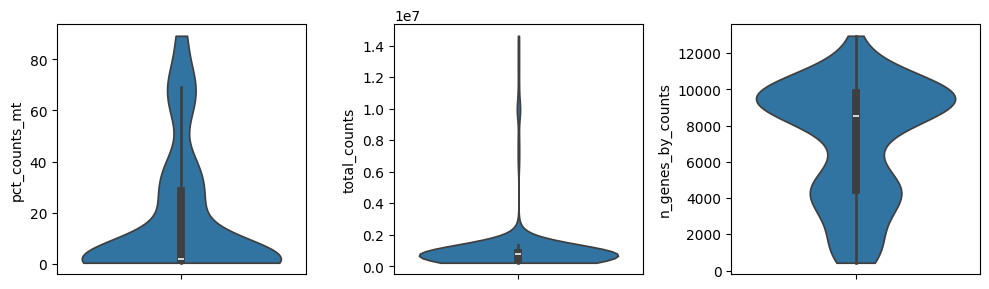
sc.pl.scatter(adata, "total_counts", "n_genes_by_counts", color="pct_counts_mt")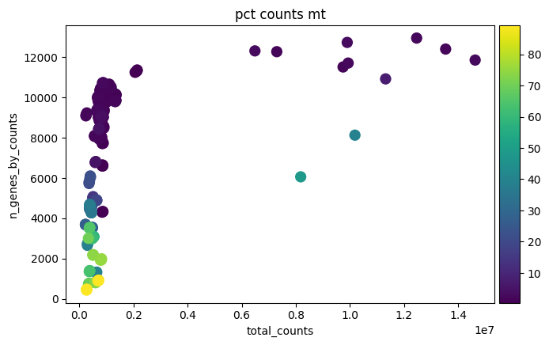
adata = adata[adata.obs.pct_counts_mt < 15].copy()sc.pl.scatter(adata, "total_counts", "n_genes_by_counts", color="pct_counts_mt")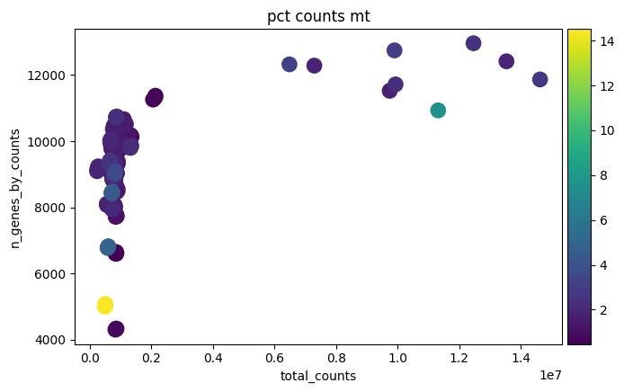
# sc.pp.filter_cells(adata, min_counts=2.5e5)
# sc.pp.filter_cells(adata, max_counts=1e7)
# sc.pp.filter_cells(adata, min_genes=2_000)adata = normalize_smartseq(adata, GENE_LEN)SMART-SEQ: Normalization
SMART-SEQ: Common genes 55364adata.var['gene_id'] = adata.var_names
adata.var_names = adata.var.gene_symbol.str.lower().values
adata.var_names_make_unique()adata.layers["counts"] = adata.X.copy()
sc.pp.normalize_total(adata)
sc.pp.log1p(adata)
adata.raw = adatasc.pp.highly_variable_genes(adata, flavor="cell_ranger", n_top_genes=3_000, batch_key="batch")sc.tl.pca(adata)sc.pl.pca(adata, color='Treatment')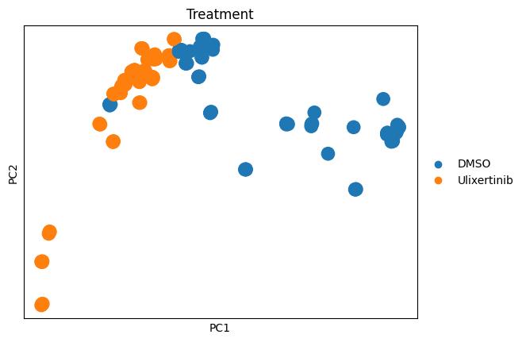
sc.pl.pca(adata, color = [
'pou5f1', 'sox2', 'nanog',
'gata6', 'gata4', 'pdgfra',
'cdx2', 'hand1', 'krt7'
], ncols=3)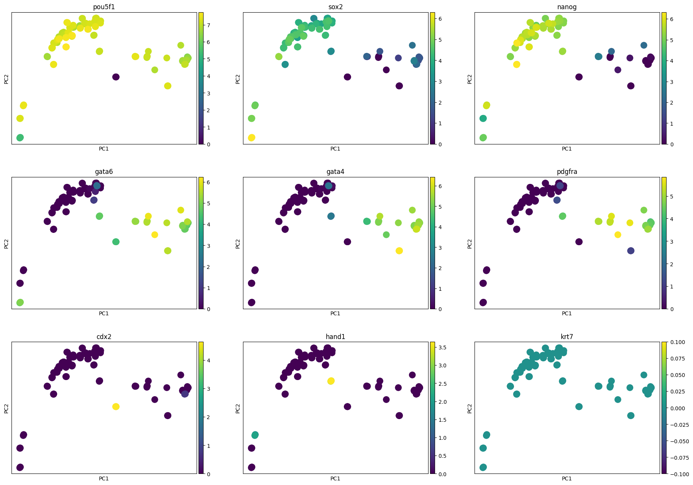
vae = scvi.model.SCVI.load('/home/fdb589/Brickman/projects/proks-salehin-et-al-v2/results/100_mouse_integration/scvi')
vaevae.adata.obs['ct_custom'] = vae.adata.obs.ct.replace('E3.75-ICM', 'Unknown')lvae = scvi.model.SCANVI.from_scvi_model(vae, labels_key="ct_custom", unlabeled_category="Unknown")
lvae.train(max_epochs=20, n_samples_per_label=15)lvae.save("../results/07_mouse_scanvi_ns_15", overwrite=True, save_anndata=True)lvae.adata.obs['predictions'] = lvae.predict()order = lvae.adata.obs.ct_custom.cat.categories.drop('Unknown')
sns.heatmap(sc.metrics.confusion_matrix("ct", "predictions", lvae.adata.obs).loc[order, order], linewidth=.5, vmin=0, vmax=1)pd.crosstab(lvae.adata.obs.ct_custom, lvae.adata.obs.predictions).loc[['Unknown']]lvae = scvi.model.SCANVI.load('../results/07_mouse_scanvi_ns_15/')Trainer will use only 1 of 4 GPUs because it is running inside an interactive / notebook environment. You may try to set `Trainer(devices=4)` but please note that multi-GPU inside interactive / notebook environments is considered experimental and unstable. Your mileage may vary.
/home/fdb589/projects/data/Brickman/conda/envs/scvi-1.1.5/lib/python3.10/site-packages/lightning/fabric/plugins/environments/slurm.py:191: The `srun` command is available on your system but is not used. HINT: If your intention is to run Lightning on SLURM, prepend your python command with `srun` like so: srun python /home/fdb589/projects/data/Brickman/conda/envs/scvi- ...
/home/fdb589/projects/data/Brickman/conda/envs/scvi-1.1.5/lib/python3.10/site-packages/scvi/model/base/_utils.py:66: FutureWarning: You are using `torch.load` with `weights_only=False` (the current default value), which uses the default pickle module implicitly. It is possible to construct malicious pickle data which will execute arbitrary code during unpickling (See https://github.com/pytorch/pytorch/blob/main/SECURITY.md#untrusted-models for more details). In a future release, the default value for `weights_only` will be flipped to `True`. This limits the functions that could be executed during unpickling. Arbitrary objects will no longer be allowed to be loaded via this mode unless they are explicitly allowlisted by the user via `torch.serialization.add_safe_globals`. We recommend you start setting `weights_only=True` for any use case where you don't have full control of the loaded file. Please open an issue on GitHub for any issues related to this experimental feature.
model = torch.load(model_path, map_location=map_location)INFO File ../results/07_mouse_scanvi_ns_15/model.pt already downloaded scvi.model.SCANVI.prepare_query_anndata(adata, lvae)
lvae_q = scvi.model.SCANVI.load_query_data(adata, lvae)INFO Found 100.0% reference vars in query data. Trainer will use only 1 of 4 GPUs because it is running inside an interactive / notebook environment. You may try to set `Trainer(devices=4)` but please note that multi-GPU inside interactive / notebook environments is considered experimental and unstable. Your mileage may vary.
/home/fdb589/projects/data/Brickman/conda/envs/scvi-1.1.5/lib/python3.10/site-packages/lightning/fabric/plugins/environments/slurm.py:191: The `srun` command is available on your system but is not used. HINT: If your intention is to run Lightning on SLURM, prepend your python command with `srun` like so: srun python /home/fdb589/projects/data/Brickman/conda/envs/scvi- ...
/home/fdb589/projects/data/Brickman/conda/envs/scvi-1.1.5/lib/python3.10/site-packages/scvi/data/_manager.py:215: UserWarning: Missing labels key ct_custom. Filling in with unlabeled category Unknown.
field_registry[_constants._STATE_REGISTRY_KEY] = field.transfer_field(lvae_q.train(max_epochs=100, plan_kwargs=dict(weight_decay=0.0), check_val_every_n_epoch=10, early_stopping=True)INFO Training for 100 epochs.
Epoch 75/100: 75%|███████▌ | 75/100 [00:10<00:03, 7.19it/s, v_num=1, train_loss_step=4.95e+3, train_loss_epoch=4.83e+3]
Monitored metric elbo_validation did not improve in the last 45 records. Best score: 4459.801. Signaling Trainer to stop.Trainer will use only 1 of 4 GPUs because it is running inside an interactive / notebook environment. You may try to set `Trainer(devices=4)` but please note that multi-GPU inside interactive / notebook environments is considered experimental and unstable. Your mileage may vary.
/home/fdb589/projects/data/Brickman/conda/envs/scvi-1.1.5/lib/python3.10/site-packages/lightning/fabric/plugins/environments/slurm.py:191: The `srun` command is available on your system but is not used. HINT: If your intention is to run Lightning on SLURM, prepend your python command with `srun` like so: srun python /home/fdb589/projects/data/Brickman/conda/envs/scvi- ...
GPU available: True (cuda), used: True
TPU available: False, using: 0 TPU cores
IPU available: False, using: 0 IPUs
HPU available: False, using: 0 HPUs
/home/fdb589/projects/data/Brickman/conda/envs/scvi-1.1.5/lib/python3.10/site-packages/lightning/fabric/plugins/environments/slurm.py:191: The `srun` command is available on your system but is not used. HINT: If your intention is to run Lightning on SLURM, prepend your python command with `srun` like so: srun python /home/fdb589/projects/data/Brickman/conda/envs/scvi- ...
LOCAL_RANK: 0 - CUDA_VISIBLE_DEVICES: [0,1,2,3]
/home/fdb589/projects/data/Brickman/conda/envs/scvi-1.1.5/lib/python3.10/site-packages/lightning/pytorch/trainer/connectors/data_connector.py:441: The 'train_dataloader' does not have many workers which may be a bottleneck. Consider increasing the value of the `num_workers` argument` to `num_workers=223` in the `DataLoader` to improve performance.
/home/fdb589/projects/data/Brickman/conda/envs/scvi-1.1.5/lib/python3.10/site-packages/lightning/pytorch/loops/fit_loop.py:293: The number of training batches (2) is smaller than the logging interval Trainer(log_every_n_steps=10). Set a lower value for log_every_n_steps if you want to see logs for the training epoch.
/home/fdb589/projects/data/Brickman/conda/envs/scvi-1.1.5/lib/python3.10/site-packages/lightning/pytorch/trainer/connectors/data_connector.py:441: The 'val_dataloader' does not have many workers which may be a bottleneck. Consider increasing the value of the `num_workers` argument` to `num_workers=223` in the `DataLoader` to improve performance.adata.obsm["X_scANVI"] = lvae_q.get_latent_representation()
adata.obs['prediction'] = lvae_q.predict()
adata.obs['entropy'] = 1 - lvae_q.predict(soft=True).max(axis=1)
lvae_q.adata.obsm["X_scANVI"] = lvae_q.get_latent_representation()
lvae_q.adata.obs['prediction'] = lvae_q.predict()
lvae_q.adata.obs['entropy'] = 1 - lvae_q.predict(soft=True).max(axis=1)sc.pl.pca(adata, color = ['prediction', 'entropy', 'Treatment'], wspace=0.2, vmax=1)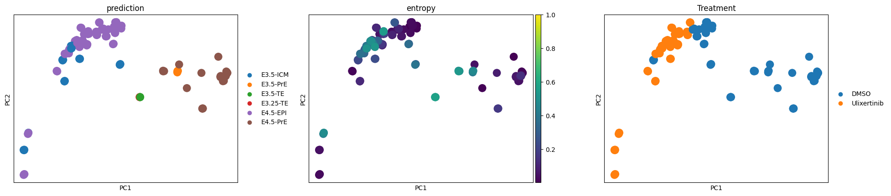
fig, ax = plt.subplots(1, adata.obs.prediction.unique().size, sharex=True, figsize=[20, 3])
for idx, p in enumerate(adata.obs.prediction.cat.categories):
adata.obs.query('prediction == @p')['entropy']\
.plot.hist(bins=30, ax=ax[idx], title=p, xlabel='', xlim=(-0.01,1),
color=adata.uns['prediction_colors'][idx])
fig.tight_layout()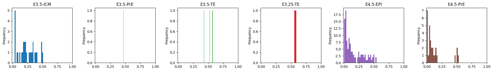
adata.write('../results/07_niakan_mouse_treatment_query.h5ad')
lvae_q.save('../results/07_query', overwrite=True, save_anndata=True)lvae = scvi.model.SCANVI.load('../results/07_mouse_scanvi_ns_15/')
lvae.adata.obs['prediction'] = lvae.predict()
lvae_q = scvi.model.SCANVI.load('../results/07_query/')
lvae_q.adata.obs['stage'] = lvae_q.adata.obs.prediction.str.split('-', expand=True)[1].valuesTrainer will use only 1 of 4 GPUs because it is running inside an interactive / notebook environment. You may try to set `Trainer(devices=4)` but please note that multi-GPU inside interactive / notebook environments is considered experimental and unstable. Your mileage may vary.
/home/fdb589/projects/data/Brickman/conda/envs/scvi-1.1.5/lib/python3.10/site-packages/lightning/fabric/plugins/environments/slurm.py:191: The `srun` command is available on your system but is not used. HINT: If your intention is to run Lightning on SLURM, prepend your python command with `srun` like so: srun python /home/fdb589/projects/data/Brickman/conda/envs/scvi- ...
/home/fdb589/projects/data/Brickman/conda/envs/scvi-1.1.5/lib/python3.10/site-packages/scvi/model/base/_utils.py:66: FutureWarning: You are using `torch.load` with `weights_only=False` (the current default value), which uses the default pickle module implicitly. It is possible to construct malicious pickle data which will execute arbitrary code during unpickling (See https://github.com/pytorch/pytorch/blob/main/SECURITY.md#untrusted-models for more details). In a future release, the default value for `weights_only` will be flipped to `True`. This limits the functions that could be executed during unpickling. Arbitrary objects will no longer be allowed to be loaded via this mode unless they are explicitly allowlisted by the user via `torch.serialization.add_safe_globals`. We recommend you start setting `weights_only=True` for any use case where you don't have full control of the loaded file. Please open an issue on GitHub for any issues related to this experimental feature.
model = torch.load(model_path, map_location=map_location)
Trainer will use only 1 of 4 GPUs because it is running inside an interactive / notebook environment. You may try to set `Trainer(devices=4)` but please note that multi-GPU inside interactive / notebook environments is considered experimental and unstable. Your mileage may vary.
/home/fdb589/projects/data/Brickman/conda/envs/scvi-1.1.5/lib/python3.10/site-packages/lightning/fabric/plugins/environments/slurm.py:191: The `srun` command is available on your system but is not used. HINT: If your intention is to run Lightning on SLURM, prepend your python command with `srun` like so: srun python /home/fdb589/projects/data/Brickman/conda/envs/scvi- ...
/home/fdb589/projects/data/Brickman/conda/envs/scvi-1.1.5/lib/python3.10/site-packages/scvi/model/base/_utils.py:66: FutureWarning: You are using `torch.load` with `weights_only=False` (the current default value), which uses the default pickle module implicitly. It is possible to construct malicious pickle data which will execute arbitrary code during unpickling (See https://github.com/pytorch/pytorch/blob/main/SECURITY.md#untrusted-models for more details). In a future release, the default value for `weights_only` will be flipped to `True`. This limits the functions that could be executed during unpickling. Arbitrary objects will no longer be allowed to be loaded via this mode unless they are explicitly allowlisted by the user via `torch.serialization.add_safe_globals`. We recommend you start setting `weights_only=True` for any use case where you don't have full control of the loaded file. Please open an issue on GitHub for any issues related to this experimental feature.
model = torch.load(model_path, map_location=map_location)INFO File ../results/07_mouse_scanvi_ns_15/model.pt already downloaded
INFO File ../results/07_query/model.pt already downloaded adata_sub = lvae_q.adata[~lvae_q.adata.obs.prediction.str.endswith('TE')].copy()ax = sc.pl.pca(adata_sub, color = ['prediction', 'entropy', 'Treatment'], wspace=0.2, vmax=1, return_fig=True)
ax.savefig('../figures/07_pca.pdf')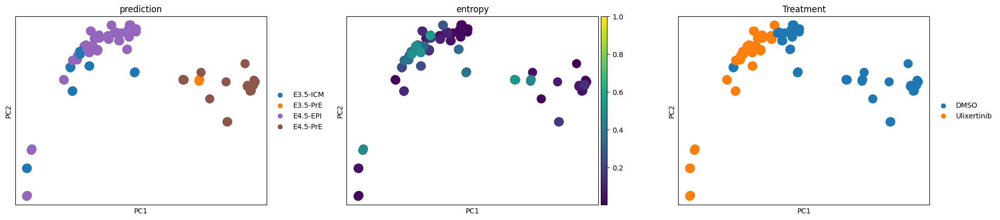
import anndata
from scvi.model.utils import mdecombined = anndata.concat([lvae.adata, lvae_q.adata])
combined.obs['dataset'] = 'Reference v1.1'
combined.obs.loc[lvae_q.adata.obs_names, 'dataset'] = 'Simon et al., 2024'
combined.obsm['X_scANVI'] = np.concatenate([lvae.get_latent_representation(), lvae_q.get_latent_representation()])
combinedAnnData object with n_obs × n_vars = 2189 × 3000
obs: 'batch', 'experiment', 'technology', 'stage', 'n_genes_by_counts', 'total_counts', 'total_counts_mt', 'pct_counts_mt', '_scvi_batch', '_scvi_labels', 'ct_custom', 'prediction', 'dataset'
obsm: 'X_scANVI'
layers: 'counts'sc.pp.neighbors(combined, use_rep='X_scANVI')
sc.tl.draw_graph(combined)
sc.tl.umap(combined)
combined.obsm['X_mde'] = mde(combined.obsm['X_scANVI'], init="random")Trainer will use only 1 of 4 GPUs because it is running inside an interactive / notebook environment. You may try to set `Trainer(devices=4)` but please note that multi-GPU inside interactive / notebook environments is considered experimental and unstable. Your mileage may vary.
/home/fdb589/projects/data/Brickman/conda/envs/scvi-1.1.5/lib/python3.10/site-packages/lightning/fabric/plugins/environments/slurm.py:191: The `srun` command is available on your system but is not used. HINT: If your intention is to run Lightning on SLURM, prepend your python command with `srun` like so: srun python /home/fdb589/projects/data/Brickman/conda/envs/scvi- ...INFO Using cuda:0 for `pymde.preserve_neighbors`. ax = sc.pl.umap(combined, color=['dataset', 'prediction', 'stage'], frameon=False, wspace=0.25, return_fig=True)
ax.savefig('../figures/07_umap.pdf')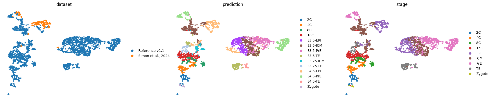
ax = sc.pl.draw_graph(combined, color=['dataset', 'prediction', 'stage'], frameon=False, wspace=0.2, return_fig=True)
ax.savefig('../figures/07_directed_graph.pdf')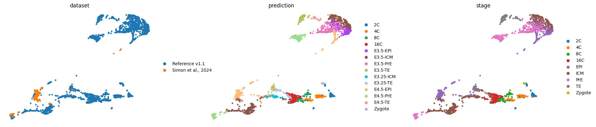
ax = sc.pl.embedding(combined, basis='X_mde', color=['dataset', 'prediction', 'stage'], frameon=False, wspace=0.2, return_fig=True)
ax.savefig('../figures/07_mde.pdf')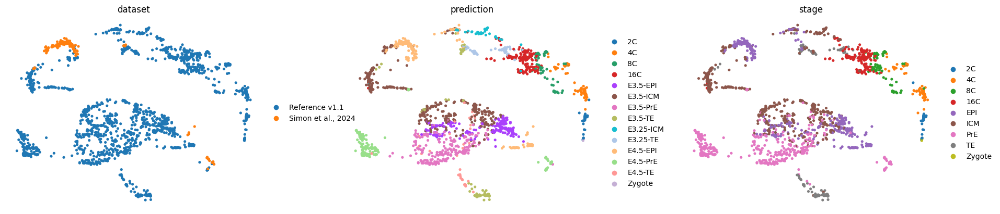
sc.tl.diffmap(combined)
sc.tl.paga(combined, groups='prediction')
sc.pl.paga(combined, color=['prediction'], frameon=False, fontoutline=True)
sc.tl.draw_graph(combined, init_pos='paga', n_jobs=10)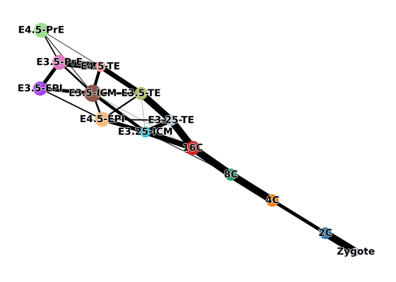
ax = sc.pl.draw_graph(combined, color=['dataset', 'prediction', 'stage'], frameon=False, wspace=0.2, return_fig=True)
ax.savefig('../figures/07_directed_graph_with_paga.pdf')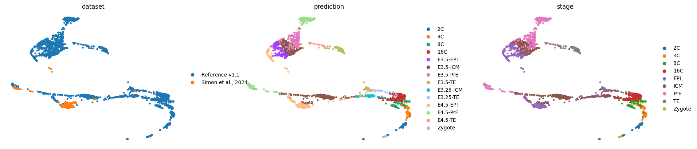
lvae.adata.raw.to_adata().write('../data/processed/07_mouse_ref_1.1.h5ad')tmp_adata = adata.raw.to_adata()
sc.pp.filter_genes(tmp_adata, min_cells=3)
tmp_adata[tmp_adata.obs.Treatment == "Ulixertinib"].write('../data/processed/07_simon_et_al.h5ad')sbatch 07_CAT.sbatchFrom CAT analysis, we can conclude that the predicted E4.5 EPI Ulix cells are E3.5-ICM and E3.75-ICM like cells. For more info, see the file ../results/07_CAT/Simon_REF_euclidean.html
df = sc.metrics.confusion_matrix('Treatment', 'prediction', adata_sub.obs, normalize=False)
df.to_csv('../results/07_treatment_prediction_counts.csv')
display(df)| prediction | E3.5-ICM | E3.5-PrE | E4.5-EPI | E4.5-PrE |
|---|---|---|---|---|
| Treatment | ||||
| DMSO | 8 | 4 | 32 | 29 |
| Ulixertinib | 21 | 0 | 87 | 0 |
combined.obs['treatment'] = 'ATLAS_WT'
combined.obs.loc[lvae_q.adata.obs_names, 'treatment'] = lvae_q.adata.obs.Treatmentepi_icm_pre_cells = combined.obs.query('batch == "NIAKAN_1" & prediction.str.contains("ICM|EPI|PrE")').index.tolist()
subset = combined[epi_icm_pre_cells].copy()
sc.tl.rank_genes_groups(subset, groupby='treatment')
sc.get.rank_genes_groups_df(subset, group='Ulixertinib').to_csv('../results/07_Ulixertinib_vs_DMSO_EPI_ICM_PrE.csv')epi_icm_cells = combined.obs.query('batch == "NIAKAN_1" & prediction.str.contains("ICM|EPI")').index.tolist()
subset = combined[epi_icm_cells].copy()
sc.tl.rank_genes_groups(subset, groupby='treatment')
sc.get.rank_genes_groups_df(subset, group='Ulixertinib').to_csv('../results/07_Ulixertinib_vs_DMSO_EPI_ICM.csv')epi_icm_cells = combined.obs.query('batch == "NIAKAN_1" & treatment == "Ulixertinib" & prediction.str.contains("ICM|EPI")').index.tolist()
atlas_epi_icm = combined.obs.query('batch != "NIAKAN_1" & prediction.isin(["E3.5-ICM", "E3.5-EPI", "E4.5-EPI"])').index.tolist()
subset = combined[epi_icm_cells + atlas_epi_icm].copy()
sc.tl.rank_genes_groups(subset, groupby='treatment')
sc.get.rank_genes_groups_df(subset, group='Ulixertinib').to_csv('../results/07_Ulixertinib_vs_Atlas_EPI_ICM.csv')epi_icm_cells = combined.obs.query('batch == "NIAKAN_1" & treatment == "DMSO" & prediction.str.contains("ICM|EPI")').index.tolist()
atlas_epi_icm = combined.obs.query('batch != "NIAKAN_1" & prediction.isin(["E3.5-ICM", "E3.5-EPI", "E4.5-EPI"])').index.tolist()
subset = combined[epi_icm_cells + atlas_epi_icm].copy()
sc.tl.rank_genes_groups(subset, groupby='treatment')
sc.get.rank_genes_groups_df(subset, group='DMSO').to_csv('../results/07_DMSO_vs_Atlas_EPI_ICM.csv')